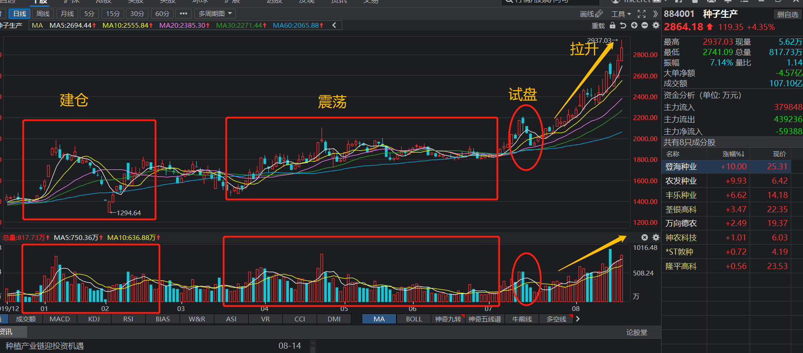
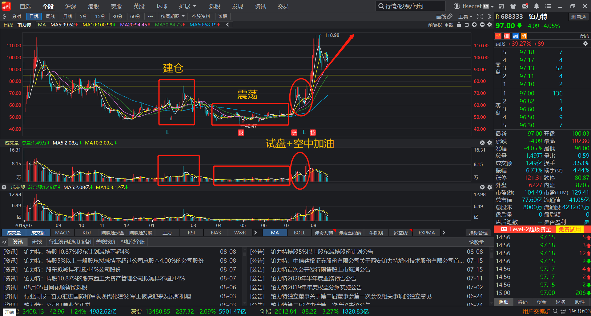
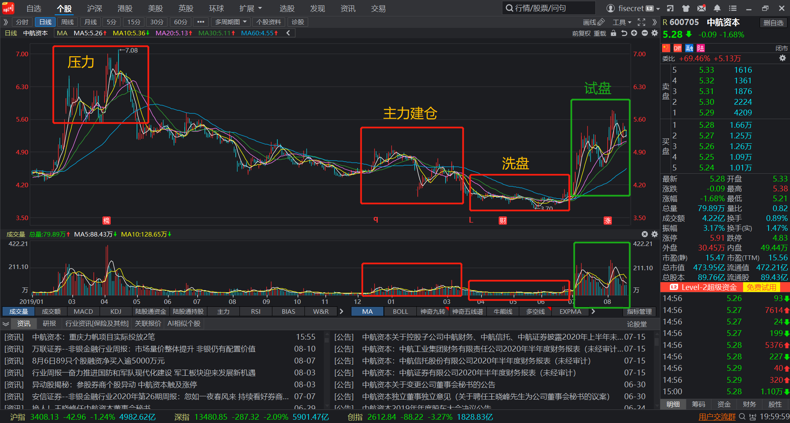

20-08-19 后市分析
因为自己中线持有的种子票涨的太快太急，已然不适合继续当中线标的继续做了。虽然后期这个板块肯定会有轮动
和反复，但我认定整个板块从建仓、洗盘、试盘、拉升已经走完了一大波中级行情，后期就算有行情，也属于鱼尾
行情，自己不会再参与，等冲高清仓。寻找下一个机会。

今日正好无事，看了一天盘，想了一些事，对后市也有了一些自己的想法和判断，也有了操作的思路。先把它总结
如下。
这一波行情，我从七月中便开始唱衰创业板，详情的逻辑可看文章《暗淡的科技股》，近两日的分化很好的证明了
我的这一判断。创业板的注册制，会使得创业板成为原来的新三板，科创板成为原来的创业板。我今日认真看了科
创板和创业板的定位。
----------------------------------------------------------------------------------------------------
从定位设计来看，科创板主要“服务符合国家战略、突破关键核心技术、市场认可度高的科技创新企业。”由于
此类企业很多可能还未盈利或盈利较弱，因此在上市条件方面放宽了对盈利的要求；创业板则主要服务成长型创新
创业企业，聚焦支持“传统产业与新技术、新产业、新业态、新模式深度融合”，对上市企业有一定的盈利要求。
从具体操作来看，由于科创板上市公司定位为“科创性”，而创业板聚焦支持“传统产业与新技术、新产业、新业
态、新模式深度融合”。
----------------------------------------------------------------------------------------------------
从两者的定位来看，创业板的想象能力会比从前降低太多太多。现在的行情和之前大不一样，因为上市的票太多太
多了，而资金总归是有限的，所以结果必然就是分化。从未有过的分化行情很有可能贯彻这一次牛市的始终。而科
技股作为每一次行情的中坚力量，是不可忽视的一部分，而真正的科技股只存在于科创板。此外，创业板注册制的
开放，还会有放宽科创板准入条件的潜在预期存在。这对科创板是潜在利好。
除了看好科创板中的票以外，还有一个新的逻辑存在。那便是多元金融--资本公司。因为在科创板开放、创业板
注册制的大背景下，可能对个股来说分流资金是利空，但对于金融业资本公司来说，是实实在在的利好。相比于
券商板块而言，多元金融类可能更加受益，他们可以直接参与股权投资，易于从公司上市中获益。况且相较于券
商股，多元金融类个股还未走出板块性行情，个股的业绩预期也都还没有兑现。有较好的潜伏价值。
在我的眼中，真正有强逻辑支撑的，只有粮食和军工两个板块。详情的逻辑可看文章《20-08-06 中线总结》.现如
今粮食板块的主升浪已经结束了，剩下的就只有军工了。自己在军工股的择股上很糟糕，没有抓到真正的龙头或者
大肉的品种，天箭科技和中国海防也都只有二十个点左右的利润。今日详细审翻阅了一下军工股阶段涨幅榜靠前的
票，发现了有一些特点：
（1）偏爱小题材。真正走出大行情的票，大多出自军工里的细分小题材，小题材的特点就是标的少，物以稀为贵。
例如中船系（共9只票）里面的中船防务；北斗系（共8只票）里面的北斗星通，中航系（共20只）里面的航发动
力。
（2）个股唯一性。这不仅体现在军工里面，今年的市场整个都是这一个特点。例如安琪酵母，唯一的上市酵母企
业，已经完成了十年二十倍的宏伟目标；光启技术，超现实技术的军工股。
因此，我的选股变得简单，即军工+科创板和军工+多元金融。
个股选择
军工+科创板 688333 铂力特
今日筛选了一遍科创板，军工类的上市公司总共只有14家，而题材上看，具有唯一性的只有两家公司。分别为从事
量子通信的国盾量子(688027)和3D打印设备的铂力特 (688333).
量子通信不是一个新兴概念，它的技术很成熟，我从Science期刊上查找国外最早关于这个概念的论文，可以追
溯到1993年，但国外很多研究就逐渐停止了，理由在于它的商业价值太低太低，几乎没有变现的可能，而且军事
上都不值得使用量子通信技术。因而它也只有实验价值存在，从学术期刊来看，这个论题从2010年开始，几乎只
有中国科学家在研究。因为新技术好往好期刊上发论文，好评职称......
从国盾量子的财务报表里面也能看出，根本没有任何变现的手段，只能依靠国家补贴来生存，况且从发行价格到现
在已经翻了十倍，形态上来说也不是突破形态，因而剔除掉它。
另一只便是铂力特 (688333).
基本面
依托于西北工业大学科研平台的3D打印公司。从他的财务报表来看，他已经有了明确的变现手段和产品，稳定的客
户。但也有一个显著的风险，那就是核心部件完全依赖进口。或许也就是科技兴国的必要性所在吧。
技术面

买点
这只票已经完成了全部的建仓洗盘操作，静待拉升，但由于大盘的下杀和科创板的弱势被打了下来，这个位置于最
低点相比上涨了一倍，不算高。若这一波创业板注册资导致的科技股的下杀能杀出恐慌盘，那就是一个很好的建仓
位置。
第一买点：85元（弱支撑，30日线）
第二买点：75元（平台上沿，强支撑）
军工+多元金融 600705 中航资本
A股里面大型国企上市的资本类公司总共就5家。中油、中粮、中航、五矿、华金。中航资本是里面唯一的一家军工
类的金融类公司。
技术面
在五家公司里，中航走的是最强的。

买点
金融类个股在牛市里是肯定会创新高的，且是排头兵，因而前期的压力位不用太过于在意。但是从中线来看，现阶
段的拉升只能当作试盘来看待，可能还有一个回落的过程，才能真正的拉升。但这仅能作参考，不是百分之百正确。
第一买点：5.05元（平台上沿+20、30日线） 建30%仓位
第二买点：4.64元（双底处） 建40%仓位
第三买点：4.14元（双龙出海，回踩起涨点） 建30%仓位 （最坏情况，发生可能性很小）